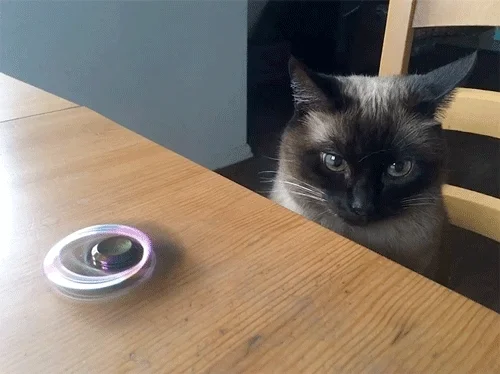

Abelardo Benitez

- Personal Backgrund: I have lived in the Charlotte area my whole life, ever since Middle School I wanted to come to UNC Charlotte. I really enjoy taking short trips to the beach or mountains, and friends have labeled me as an audiophile.
- Professional Background: I have worked at Jimmy John’s starting in High School through now. Management and customers tell me my customer service is outstanding, even though I do not think so!
- Academic Background: At first High School was okay being a C student, but that changed when I started Community College. I started turning in my work and looking over the notes I took and started getting B’s and eventually A’s! Now I have an associates degree in Arts (That I did not know about for a year until only 3 days before the Fall 2024 semester) and am seeking a Bachelor’s degree in Computer Science and a Minor in Economics.
- Background in this Subject: Specifically Web development; it goes back only a year to when I needed to use D3 to create charts from data for a class here at UNC Charlotte. Computers in General; back in middle school I was given a laptop and I took that as an opportunity to jailbreak my Wii. Started messing with theming the Wii, along with experimenting with a custom race track in Mario Kart Wii! Freshman year the laptop just broke on me and I did not know how to fix it, so it was thrown out along with all the stuff I did on it. Now I have a Desktop that runs Linux as main OS as of Spring 2024, and Virtualizes Windows for playing games.
- Primary Computer Platform: I do not think I can really say I stick to one. The one I know the best is Windows; I use Linux and Windows on my desktop switching between the two often, and I use a Macbook for school and when I go on trips. My preferred OS as of recent? Mac OS
- Courses I'm in and Why:
- ECON 3122 - Intermediate Microeconomics: I feel it would be more important to focus on the micro aspect of economics than macro or managerial economics. That opinion may change, but hey this also helps towards a degree!
- ITIS 3135 - Web App Design and Development: Why not learn how to do a bit of web app stuff? I think I may be able to make a few things my friends will find helpful as well.
- PSYC 1101 - General Psychology: Taking it because it is required? Not gonna lie I have nothing else to say about this one.
- ITIS 3200 - Intro to Info Security and Privacy: I already have a hard time giving information out in forms on websites because I have no idea what they are going to do, why not learn about it also.
- Funny/Interesting Item about myself: I still use a fidget spinner! I do not bring it to class because it might distract me, but I am usually spinning one at my desk or at work when there is absolutely nothing going on.
- I'd also like to share: HMU for some COD Zombies on PC! Good public lobbies are hard to find :(